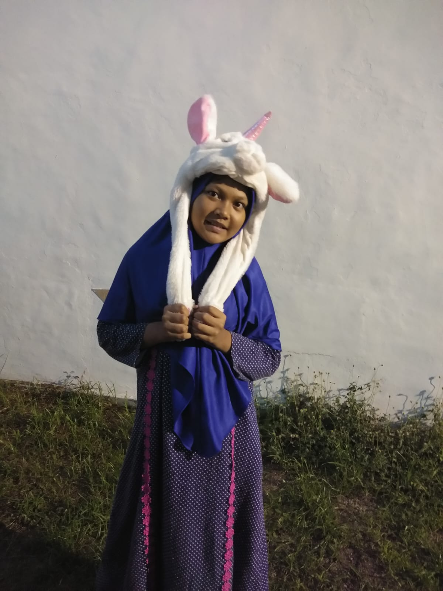

Halo, saya
Selamat datang di website portfolio saya. Seorang pelajar yang sedang belajar dan siap menjalani hari hari yang berat dengan segala keihklasan
Tentang SayaNama saya Jihan Amelia Salsabila. Saya adalah siswa kelas XII ITCP 2 dari MAM 01 Karangasem Paciran.
Saya tertarik di bidang sejarah dan budaya internasional, Melalui pengetahuan sejarah dan budaya secara internasional, saya lebih ingin mengetahui lebih banyak sejarah dan budaya negara-negara lain untuk menambah pengetahuan saya pribadi.
Kelas XII ITCP 2
Saya memiliki berbagai hobi menulis, membaca, menyanyi, dan bermain game adalah hobi faforit saya bukan hanya hobi faforit yang menjadi bagian dari hidup saya, apapun bentuk aktivitas yang saya sukai juga menjadi bagian dari hobi Saya seperti membuat desain baju ataupun memasak.
"Tak semua usaha itu selalu mudah, tapi semua yang berusaha pasti akan berubah dikemudian hari."